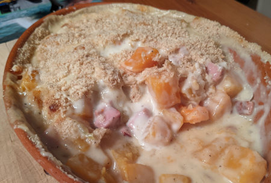

| Zutaten für 4 Personen: | |
| 100 g | Speckwürfeli |
| 1 | Zwiebel |
| 1 | Knoblauchzehen |
| 1 kg | Kürbis |
| 1 EL | Kräuter- oder Weinessig |
| 3 dl | Gemüsebouillon |
| 1 EL | Butter |
| 2 EL | Mehl |
| 1,5 dl | Sauerrahm |
| 1 EL | Paniermehl |
| 1 EL | geriebener Parmesan |
| wenig | Schnittlauch |
| allenfalls | Dill |
| 1 Prise | Muskat |
| Salz, Pfeffer | |
Zwiebel und Knoblauchzehe fein hacken.
Kürbis in Würfel schneiden.
Bouillon zubereiten.
Ofen auf 220°C vorheizen.
Speckwürfel knusprig braten.
Zwiebel und Knoblauchzehe mitdämpfen.
Die Kürbiswürfel zugeben und mitdämpfen.
Mit dem Essig und der Bouillon ablöschen. Den Kürbis knapp weichkochen, so, dass die Würfel nicht zerfallen (10-20 Minuten).
Flüssigkeit absieben und 1.5 dl beiseite stellen. Würfel in eine gefettete Gratinform geben.
Sauce:
Butter schmelzen, Mehl schwitzen. 1.5 dl Kochflüssigkeit unter ständigem Rühren mit dem Schwingbesen dazugiessen und zum kochen bringen.
Die Sauce vom Herd nehmen. Sauerrahm beifügen und glatt rühren. Mit Dill, Schnittlauch, Muskat, Salz und Pfeffer abschmecken. Sauce über das Gemüse giessen.
1 El Paniermehl und 2 El Parmesan darüber streuen. Während 20 Minuten im vorgeheizten Ofen bei 220°C gratinieren.
Fenner's Kürbisrezepte, Herbert Eigenmann, Code: KÜG
Schmeckt ausgezeichnet, RE, 11.10.2006
@LINKBACK_TAG@ @WAKELOCK@